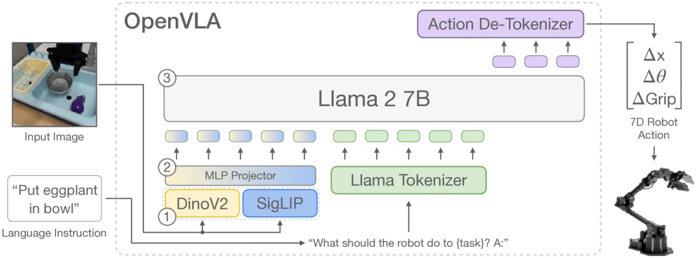
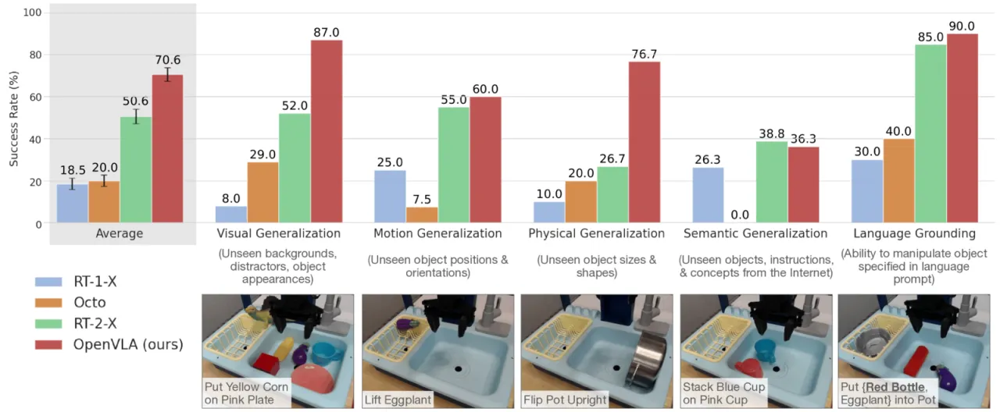
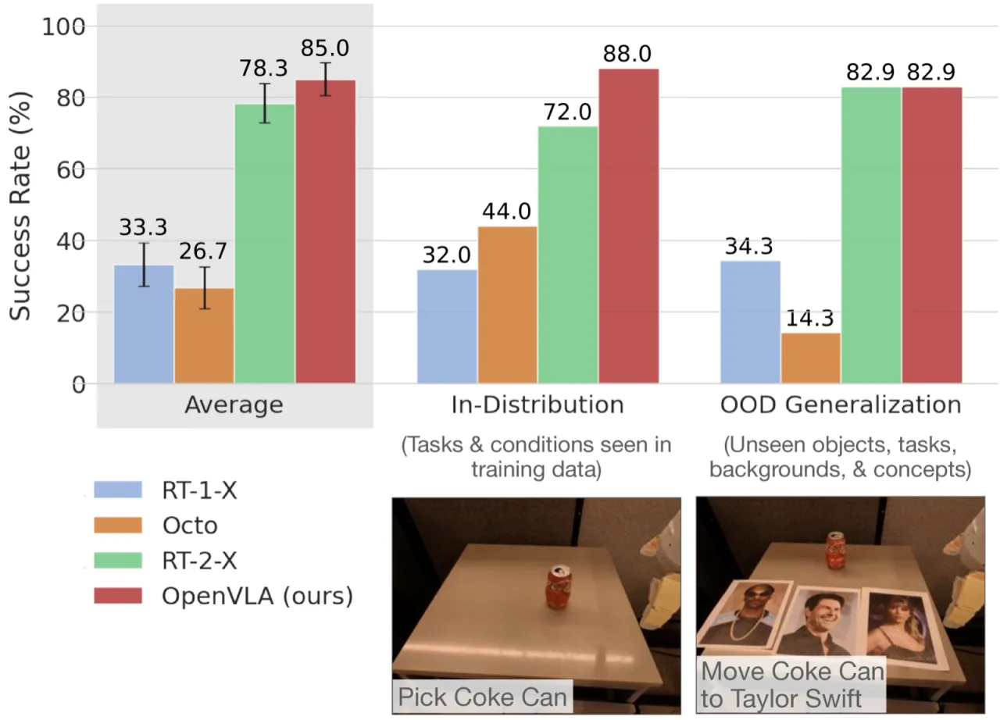
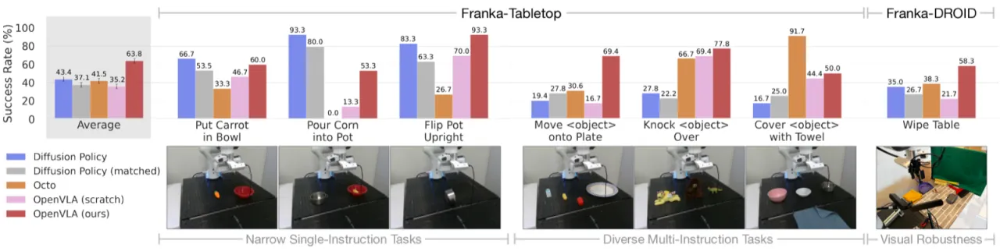
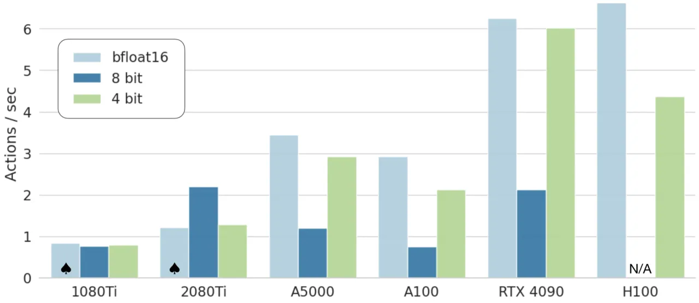

OpenVLA 是一个 70 亿参数的开源视觉-语言-动作模型，在 970k 真实机器人演示上训练。它在 BridgeData V2 基准上以 71.3% 的任务成功率超越闭源 RT-2-X（55B 参数）16.5%，同时支持在消费级 GPU 上通过 LoRA 进行参数高效微调，将显存需求从 163 GB 降至 60 GB。
当前最强的视觉-语言-动作（VLA）模型（如 RT-2-X）均为闭源，架构、训练数据、部署方法均不公开；而开源社区的替代方案又缺乏在消费级硬件上高效适配新机器人和任务的实用手段。OpenVLA 旨在填补这一空白。
"We present OpenVLA, a 7B-parameter open-source VLA trained on 970k real-world robot demonstrations from the Open X-Embodiment dataset, and show that it outperforms RT-2-X (55B parameters) by 16.5% on manipulation tasks while requiring 7× fewer parameters."

RT-2-X 等顶尖 VLA 不公开权重与训练代码，研究者无法复现、改进或深入理解其决策机制。学术界和工业界被迫从头开发，资源浪费严重。
现有 VLA 论文几乎没有讨论如何高效地将模型适配到新机器人、新场景、新任务。全量微调需要多台 A100，普通实验室无法承受。量化和 LoRA 等方法在 VLA 场景下的效果尚未系统研究。
OpenVLA 将机器人控制重新表述为视觉-语言任务：给定图像观测和语言指令，模型以自回归 token 序列方式预测连续动作。核心创新在于双视觉编码器融合、动作 token 化方案，以及基于 Open X-Embodiment 的大规模多机器人训练。
OpenVLA 将 DINOv2（擅长空间推理与细粒度定位）和 SigLIP（擅长语义理解与语言对齐）的特征在 token 维度直接拼接，输入 224×224 像素图像。实验证明：更高分辨率（如 384×384）在机器人操作任务上没有带来性能提升，却使训练时间增加了 3 倍。
对每个动作维度，使用训练数据的 1st–99th 百分位范围均匀离散化为 256 个 bin。为最小化对语言知识的干扰，将 Llama 2 词表中使用频率最低的 256 个 token 直接覆写为动作 token，并在交叉熵损失中只计算动作 token 的梯度。
针对将 OpenVLA 适配至新机器人设置（如 Franka Emika Panda），作者系统评估了 LoRA、Sandwich adapter 及全量微调方案。LoRA r=32 仅需训练 97.6M 参数（全量的 1.4%），在单块 A100 上完成微调（10–15 小时），显存需求从 163.3 GB 降至 59.7 GB，且性能与全量微调持平。
使用 bitsandbytes 库的 int4 量化，在保持 71.9% 成功率（与 bfloat16 的 71.3% 相当）的同时，将推理显存从 16.8 GB 压缩至 7.0 GB，使 OpenVLA 可在单张消费级 GPU 上运行。
在三个真实机器人平台（WidowX、Google Robot、Franka）上评估，对比基线包括 RT-2-X、RT-1-X、Octo 和 Diffusion Policy。评测维度涵盖视觉泛化（新背景、干扰物）、运动泛化（新位置）、物理泛化（新大小/形状）和语义泛化（新物体、新指令）。

| 模型 | BridgeData V2 成功率 | Google Robot 成功率 | 参数量 |
|---|---|---|---|
| RT-2-X（闭源） | 54.8% | ~75% | 55B |
| RT-1-X | — | <75% | 35M |
| Octo | <54.8% | <75% | 93M |
| OpenVLA（本文） | 71.3% ±4.8% | 75.0% | 7B |


| 方法 | 综合成功率 | 最低单任务成功率 |
|---|---|---|
| Diffusion Policy | 47.4% ±5.4% | — |
| Octo 微调 | 47.0% ±5.5% | ~0%（部分任务） |
| OpenVLA 从头训练 | 42.2% ±5.9% | — |
| OpenVLA 微调 | 56.6% ±5.8% | ≥50%（全部任务） |
| 微调策略 | 成功率 | 可训练参数（M） | 显存（batch 16） |
|---|---|---|---|
| Full FT（全量微调） | 69.7 ±7.2% | 7,188.1 | 163.3 GB* |
| LoRA r=32 | 68.2 ±7.5% | 97.6 | 59.7 GB |
| LoRA r=64 | 68.2 ±7.8% | 195.2 | 60.5 GB |
| Sandwich Adapter | 62.1 ±7.9% | 914.2 | 64.0 GB |
| 精度 | 成功率 | 推理显存 |
|---|---|---|
| bfloat16 | 71.3 ±4.8% | 16.8 GB |
| int8 | 58.1 ±5.1% | 10.2 GB |
| int4 | 71.9 ±4.7% | 7.0 GB |

OpenVLA 当前仅支持单张图像作为观测输入，不支持观测历史序列，也不支持 proprioceptive（本体感知）信息（如关节角度）。这使其无法处理需要时序推理的任务（如 ALOHA 双臂操作），也与 Octo 等支持多模态输入的策略存在差距。
受 Llama 2 自回归解码的限制，OpenVLA 的推理速度约为 6 Hz，远低于 ALOHA 等高频控制系统所需的 50 Hz。这限制了其在需要快速响应的灵巧操作任务中的应用。
尽管在多个基准上超越现有方法，OpenVLA 在大多数任务上的成功率仍低于 90%，离真实部署所需的鲁棒性存在差距。
作者指出以下问题未被充分研究：① 基础 VLM 规模（7B 是否最优）；② 与 Internet 数据联合训练的效果；③ 视觉特征选择的最优方案（DINOv2 + SigLIP 组合是否是最优选择）。这些问题留待未来工作解答。